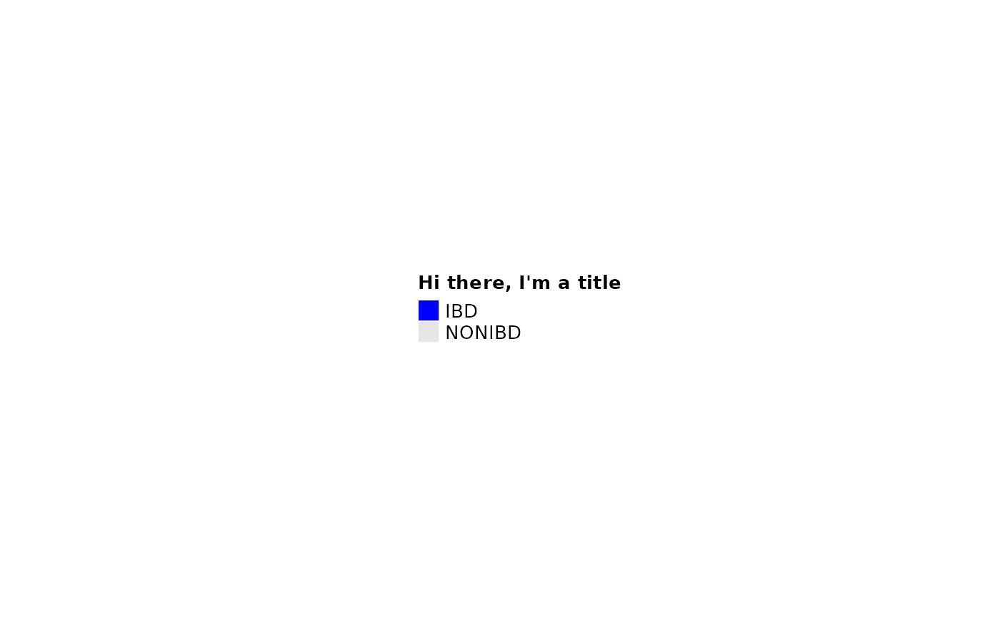

Convenience function for generating a legend for anno_cat annotations.
Source:R/heatmaps-sampleAnnotation.R
anno_cat_legend.RdConvenience function for generating a legend for anno_cat annotations.
Arguments
- col
vector of colors, named by all levels of data (e.g. x) or not named
- x
optional: vector of data to pair with unnamed col or check against named col
- renamer
function applied to generate labels: from names(col) or levels of x
- title
title of legend
- ...
Arguments passed on to
ComplexHeatmap::LegendlabelsLabels corresponding to
at. If it is not specified, the values ofatare taken as labels.nrowFor legend which is represented as grids,
nrowcontrols number of rows of the grids if the grids are arranged into multiple rows.ncolSimilar as
nrow,ncolcontrols number of columns of the grids if the grids are arranged into multiple columns. Note at a same time only one ofnrowandncolcan be specified.by_rowAre the legend grids arranged by rows or by columns?
grid_heightThe height of legend grid. It can also control the height of the continuous legend if it is horizontal.
grid_widthThe width of legend grid. It can also control the width of the continuous legend if it is vertical.
gapIf legend grids are put into multiple rows or columns, this controls the gap between neighbouring rows or columns, measured as a
unitobject.labels_gpGraphic parameters for labels.
labels_rotText rotation for labels. It should only be used for horizontal continuous legend.
borderColor of legend grid borders. It also works for the ticks in the continuous legend.
typeType of legends. The value can be one of
grid,points,linesandboxplot.directionDirection of the legend, vertical or horizontal?
title_positionPosition of title relative to the legend.
topleft,topcenter,leftcenter-rotandlefttop-rotare only for vertical legend andleftcenter,lefttopare only for horizontal legend.title_gapGap between title and the legend body.
Examples
grid::grid.newpage()
ComplexHeatmap::draw(
anno_cat_legend(
col = c("ibd" = "blue", "nonibd" = "grey90"),
renamer = toupper, title = "Hi there, I'm a title"
)
)
